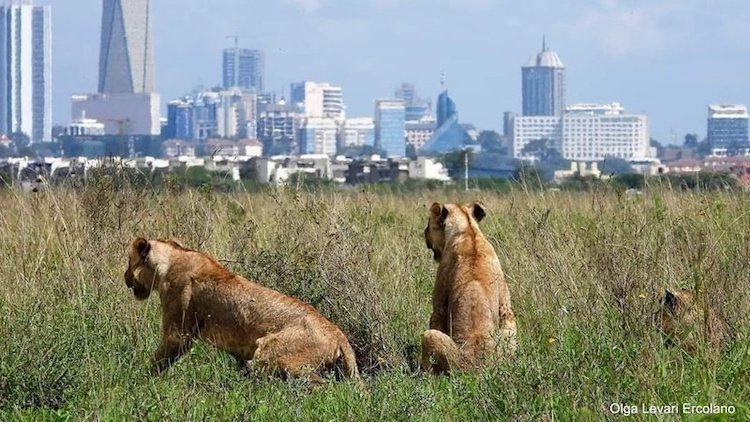
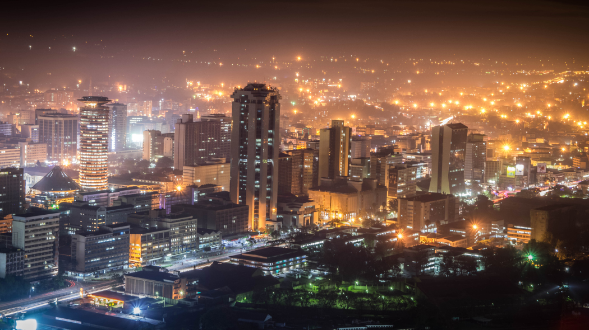

Tourism
East Africa's most cosmopolitan city, Nairobi is Kenya's beating heart, an exciting, maddening concrete jungle that jarringly counterpoints the untrammelled natural beauty to be found elsewhere in the country. Tourist places in Nairobi that are worth visiting are National Museum, Railway Museum, Giraffe Centre, Karen Blixen, Karura Forest, David Sheldrick Trust Elephant Orphan Centre, Ngong Hills, Blue Sky Tours in Diamond Plaza, Nairobi Arboretum, Panari Sky Centre, Bomas of Kenya, Uhuru Garden, GP Karting, Village Market, Mamba Village, Paintball Fury Limited, Maasai Ostrich Farm, Paradise Lost, August Memorial Park, Kenya National Archives, KICC, Art Centres and Nairobi National Park. Kenya’s largest city and capital, Nairobi implores diversity in romance and puts forward exalted adventure. The city transformed from a meek camp for the railway employees in the year 1899 to the capital named British East Africa by the year 1907. Today, the rich retrospective history and tribal culture and lifestyle are brought to life through its excellent and knowledgeable museums. In particular, the museum named Karen Blixen Museum is one of the biggest hits – not only the African fans come to praise and appreciate the museum but also people from all over the world visit the museum to view the namesake Danish author who with drudgeries toiled on the coffee farmstead in the midst of the beautiful Ngong Hills. Even in such a scampering city like Nairobi, wildlife is a colossal draw. Being a cosmopolitan capital, Nairobi is the only city in the globe that brags a safari park within its frontiers.
Demographics

Nairobi has experienced one of the highest growth rates of any city in Africa. Since its foundation in 1899, Nairobi has grown to become the second largest city in the African Great Lakes, despite being one of youngest cities in the region. The growth rate of Nairobi is 4.1% a year. It is estimated that Nairobi's population will reach 5 million in 2025. Nairobi is divided into a series of constituencies with each being represented by members of Parliament in the National Assembly. These constituencies are: Makadara, Kamukunji, Starehe, Langata, Dagoretti, Westlands, Kasarani, and Embakasi. The main administrative divisions of Nairobi are Central, Dagoretti, Embakasi, Kasarani, Kibera, Makadara, Pumwani, and Westlands. Most of the upmarket suburbs are situated to the west and north-central of Nairobi, where most European settlers resided during the colonial times AKA 'Ubabini'. These include Karen, Langata, Lavington, Gigiri, Muthaiga, Brookside, Spring Valley, Loresho, Kilimani, Kileleshwa, Hurlingham, Runda, Kitisuru, Nyari, Kyuna, Lower Kabete, Westlands, and Highridge, although Kangemi, Kawangware, and Dagoretti are lower income areas close to these affluent suburbs. The city's colonial past is commemorated by many English place-names.
History
Nairobi was founded in 1899 by the colonial authorities in British East Africa, as a rail depot on the Uganda Railway. The town quickly grew to replace Mombasa as the capital of Kenya in 1907. After independence in 1963, Nairobi became the capital of the Republic of Kenya. During Kenya's colonial period, the city became a centre for the colony's coffee, tea and sisal industry.The city lies in the south central part of Kenya, at an elevation of 1,795 metres (5,889 ft). Home to thousands of Kenyan businesses and over 100 major international companies and organizations, including the United Nations Environment Programme (UN Environment) and the United Nations Office at Nairobi (UNON), Nairobi is an established hub for business and culture. The Nairobi Securities Exchange (NSE) is one of the largest in Africa and the second-oldest exchange on the continent. It is Africa's fourth-largest exchange in terms of trading volume, capable of making 10 million trades a day. It also has the Nairobi National Park with a large game reserve.